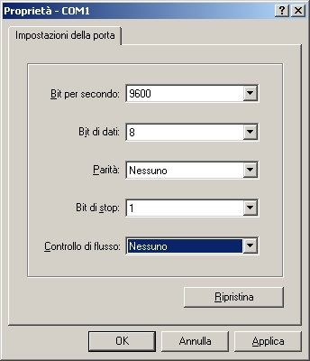
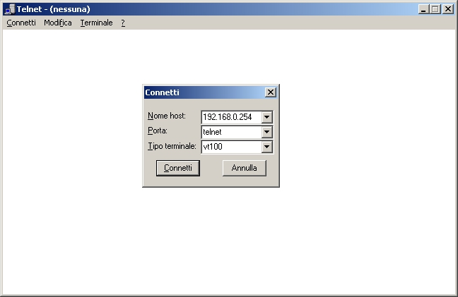
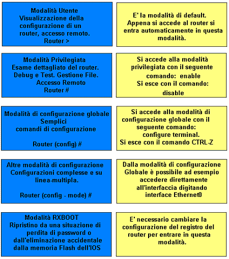

La
configurazione iniziale del router va effettuata connettendosi tramite un cavo
seriale alla sua porta console. Questa operazione è necessaria in quanto
il router non è ancora dotato di un indirizzo IP per poter essere raggiunto
tramite una sessione telnet.
In seguito, per effettuare verifiche, controlli e modifiche alla configurazione,
potremo raggiungere il router tramite appunto una semplice sessione telnet.
Per collegarsi alla porta console è sufficiente utilizzare un PC dotato
di un programma di emulazione di terminale (ad esempio Hyper Terminal, in dotazione
con il sistema operativo Windows). Il software va configurato per connettersi
alla porta seriale del PC prescelta (porta seriale COM1, ad esempio), con i
seguenti parametri:

Diversamente, come già accennato prima, se il router è già dotato di un suo indirizzo IP, in quanto già configurato, è possibile raggiungerlo tramite una sessione Telnet nel seguente modo:

Quando ci colleghiamo in modalità terminale (Hyper Terminal o Telnet) al nostro router abbiamo a disposizione diverse modalità che permettono altrettante funzionalità diverse:

Tabella delle modalità
| Modalità utente |
Router> |
||||
| Modalità privilegiata |
Router# |
||||
| Modalità di configurazione globale |
Router(config)# |
||||
| Modalità
di configurazione specifica |
|||||
| Router(config-if)# | Router(config-controller)# |
Router(config-line)# |
Router(config-router)# |
Router(config-subif)# |
Router(config-ipx-router)# |
Quando siamo loggati in modalità privilegiata abbiamo a disposizione una serie di comandi fondamentali per la verifica dello stato del router e per la verifica delle configurazioni che vedremo in seguito.